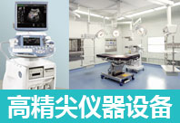

-
圣玛无菌层流手术室
根据建设部《医院洁净手术部建筑技术规范（GB50333-2002）》，层流手术室空气洁净度可分为百级、千级、万级、十万级和三十万级五个级别，级数越小，表示单位空间内细菌数量越少。圣玛医院所有手术室均达到千级洁净度，局部手术区达到百级洁净标准。无菌的手术环境，避免因手术环境而导致的术中术后感染！
-
先进医疗设备 母婴健康坚实保障
建有多间国际标准的层流净化手术室、无菌分娩室和LDR家庭一体化分娩室，引进美国GE-E8型高级四维彩超、新生儿工作平台、美国DatexOhmeda麻醉机、美国贝克曼化学发光仪等一系列代表妇产科专业国际化诊疗水平的医疗设备，并由产科主任团结合不同孕妇的自身特征，私人定制完善的孕产计划。
-
七星孕产环境 9对1全方位呵护
以欧洲皇家别院为灵感，整体建筑采用欧式风格，基础设施一应俱全，为孕妈营造如家一般温馨舒适的星级孕产环境，并组成“9对1”专业呵护团队（产科主任、高级护士、营养师、专职管家、心理医生、母婴护理师等）从医疗到生活的方方面面，微笑和舒适渗透到每一个细节，让您尽情享受无微不至的人文关怀。